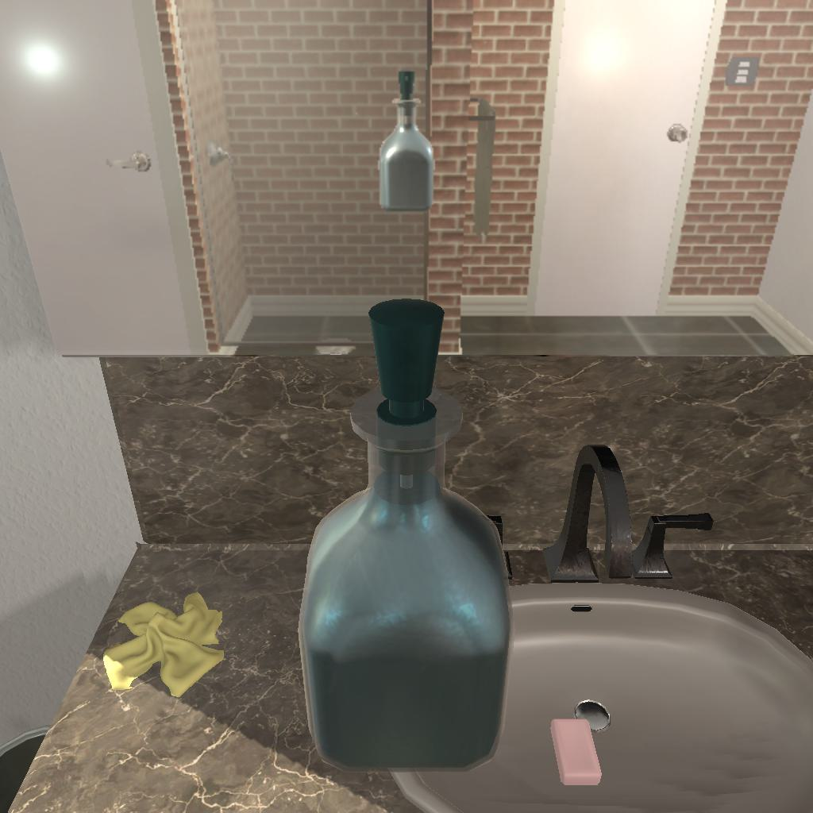

---------------------------------------------------------task: 27---------------------------------------------------------
--------------------------------------------------------------------------------------------------------------------------------------------------------------------
--------------------------------------------------------------------------------------------------------------------------------------------------------------------
Step:--------------------------------------------------------------------------19-------------------------------------------------------------------------------
----------------------------------------
VLM Prompt:
Image1:
Image2:
**Instruction**
1. Analyze the provided images to identify all visible household objects and compare the difference between images (e.h. whether the object is opened or not and taken on hand or not), focusing on those relevant to the task description "find two soapbottle and put them in garbagecan."
2. Use the analysis of images and the task hint "The agent must find an object of the desired type, pick it up, find the correct location to place it, put it down there, then look for another object of the desired type, pick it up, return to previous location, and put it down there with the other object." to answer the question: what is the most reasonable action in the choices for the task description "find two soapbottle and put them in garbagecan"?
3. Decide and write the answer using the template: The answer is: (i): , where i is the real number. If there is no desired object in images, search every place based on **Initial Observation** to find the object. And if no one is exactly correct, choose a similar answer.
**Initial Observation**
You are in the middle of a room. Looking quickly around you, you can see countertop (1), sinkbasin (1-2), sink (1-2), garbagecan (1), drawer (1-2), toilet (1), handtowelholder (1)
**Answer Choices**
(1): go to garbagecan 1
(2): go to drawer 1
(3): go to drawer 2
(4): go to sink 2
(5): go to sinkbasin 2
(6): go to toilet 1
(7): go to handtowelholder 1
(8): put soapbottle 2 in/on sink 1
(9): clean soapbottle 2 with sinkbasin 1
(10): clean soapbottle 2 with sink 1
(11): clean soapbottle 2 with sink 2
(12): clean soapbottle 2 with sinkbasin 2
(13): examine soapbottle 2
(14): examine sink 1
**Answer**
Let's think step by step by following the instructions.
----------------------------------------
----------------------------------------
Original Response:
Firstly, we need to identify visible household objects in the images provided. In both Image1 and Image2, we can see a soap bottle on the countertop in front of the sink. Additionally, there is a yellow cloth beside it. There are no significant visible differences between the two images, and there is no indication that the soap bottle has been moved or opened.
Now, considering the task description "find two soapbottle and put them in garbagecan" and the task hint provided, the most reasonable action would be to first locate and pick up the soap bottle. However, in the initial observation, we only have one soap bottle visible, and we need to find another one.
According to the initial observation, the likely places to search for another soap bottle could be the countertop, drawer, or sink basin. Since we already see one soap bottle on the countertop, the next reasonable place to search could be in the drawers, as they often contain extra household items.
Therefore, the most reasonable action to take next would be to search the drawers for another soap bottle. The answer is: (2): go to drawer 1. If a second soap bottle is found in drawer 1, it can then be taken to the garbagecan along with the first soap bottle from the countertop. If drawer 1 does not contain the second soap bottle, the next reasonable action would be to check drawer 2.
----------------------------------------
----------------------------------------
>>> Refine Original VLM Response and Get Pure Action: go to drawer 1
----------------------------------------
-----------------------------------------------------------------
Running time: 22.03045344352722 seconds
Total Money: 14.339470000000002
-----------------------------------------------------------------
-----------------------------------------------------------------
Text Observation:You arrive at loc 4. The drawer 1 is closed.
-----------------------------------------------------------------
UNSUCCEED